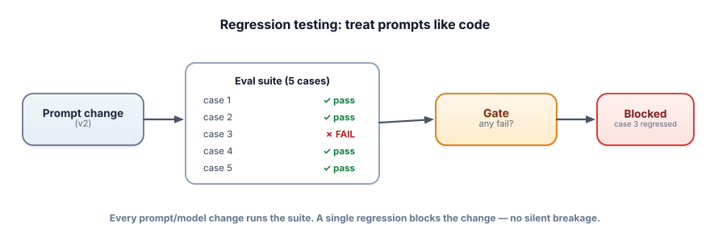

Regression-testing prompts
A “tiny” prompt tweak to fix one case can silently break five others — and you won’t notice until a user does. The fix is to treat prompts like code: a test suite that runs on every change and blocks regressions. This is where evals become a habit, not an afterthought.
Why prompts need tests like code does
Prompts, models, RAG settings, and fine-tunes are all changeable behavior that can regress. Unlike code, the failures are often invisible: the change still runs, it just answers worse on cases you didn’t check. A regression test is an eval case that must keep passing; a suite of them, run automatically on every change and used to block bad changes, is exactly continuous integration (CI) — applied to your LLM system. It converts “I hope I didn’t break anything” into a green or red check.

A regression test verifies that a previously-correct behavior still works after a change. An eval suite is your golden set wired up to run automatically and report pass/fail. A gate is the rule that decides whether a change can ship (e.g., “no case may regress” or “overall score must not drop”). Prompt versioning means treating each prompt as a versioned artifact you can compare and roll back, just like code.
Run the gate
Your baseline (v1) passes 4 of 5 cases. Try a good candidate and a risky one, and watch the gate decide.
Prompt CI gate
Wire your golden set into plain assertions. Run it in CI; a regression fails the build, exactly like a broken unit test.
# test_prompts.py — run with: pytest (free)
import pytest
from my_system import answer # the current prompt/pipeline
GOLDEN = [
("What's the refund window?", "30 days"),
("How do I reset my password?", "Settings"),
("Do you ship to Antarctica?", "don't know"), # must abstain
]
@pytest.mark.parametrize("query, must_include", GOLDEN)
def test_golden(query, must_include):
out = answer(query, temperature=0) # temp 0 → deterministic, non-flaky
assert must_include.lower() in out.lower(), f"Regressed on: {query}"
# For fuzzy quality, assert on an LLM-judge score threshold instead of a keyword:
# assert judge(query, reference, out)["score"] >= 4Now a prompt change that breaks the “abstain” case turns the build red with “Regressed on: Do you ship to Antarctica?” — caught in CI, before any user sees it. Two tricks keep LLM tests stable: use temperature 0 and assert on structure/keywords or judge thresholds, not exact wording.
- Prompts/models/RAG are changeable behavior that silently regresses — test them like code.
- An eval suite run in CI turns your golden set into a pass/fail gate on every change.
- Define the gate explicitly: no case may regress, or overall score must not drop.
- Keep LLM tests non-flaky with temperature 0 and structural / judge-threshold assertions (not exact strings).
- Version prompts so you can compare and roll back.
Your prompt regression tests fail intermittently — sometimes green, sometimes red, with no code change. What’s the most likely cause and fix?
1. Write a gating rule for a change that improves 8 cases but regresses 1 critical safety case. Should it ship?
2. Why assert on keywords/structure or a judge threshold instead of exact output strings?
3. Your team ships prompt changes by editing them directly in production. List two problems and the fix.
▸ Show solutions & reasoning
1. It should not ship as-is. A sensible gate: overall score may improve, but no critical case (safety, abstention, correctness on key facts) may regress — those are hard blocks. Net improvement doesn’t justify a safety regression. Mark critical cases specially and require them to always pass; the candidate must fix the safety case first.
2. Because LLM outputs have many valid phrasings — exact-match would fail correct answers that are worded differently, making tests brittle and flaky. Asserting that the answer contains the key fact, matches the required structure, or clears an LLM-judge quality threshold checks what actually matters while tolerating harmless variation. You’re testing meaning/correctness, not stenography.
3. Problems: no way to know if a change regressed other cases (no eval gate), and no way to roll back or audit what changed (no versioning). Fixes: store prompts as versioned artifacts in source control, and run the eval suite as a CI gate before any prompt reaches production — so changes are reviewed, tested, and revertible like any code.
The endgame is that evaluating an LLM change feels as routine as running tests on code. Concretely: prompts live in version control; a change opens a pull request; CI runs the eval suite (keyword/structural checks for closed outputs, LLM-judge thresholds for fuzzy quality) against the golden set; the result posts as a check with per-category scores and any regressions highlighted; the gate blocks merges that regress critical cases or drop the overall score. Reviewers see “quality 0.91 → 0.94, no regressions” instead of arguing about a few cherry-picked examples. This is how fast-moving teams ship LLM changes daily without breaking things.
Two pragmatic notes. First, balance strictness vs. friction: gate hard on critical/safety cases and overall score, but allow small movement on individual fuzzy cases so the suite isn’t paralyzingly flaky — and invest in determinism (temp 0, robust assertions) so the signal is trustworthy. Second, the suite must keep growing: every production incident becomes a new permanent test, so the same bug can never ship twice.
Combined with tracing (which supplies the failures) and online eval (which validates real impact), regression testing closes the loop — your golden set, your CI gate, and your production observability together form a system where quality only ratchets upward. That ratchet, more than any single technique, is what “shipping reliable LLM products” actually means.
You’ve built the full evaluation toolkit — the skill that quietly underlies every other track. Time to pressure-test it. On to the Track 6 interview check.